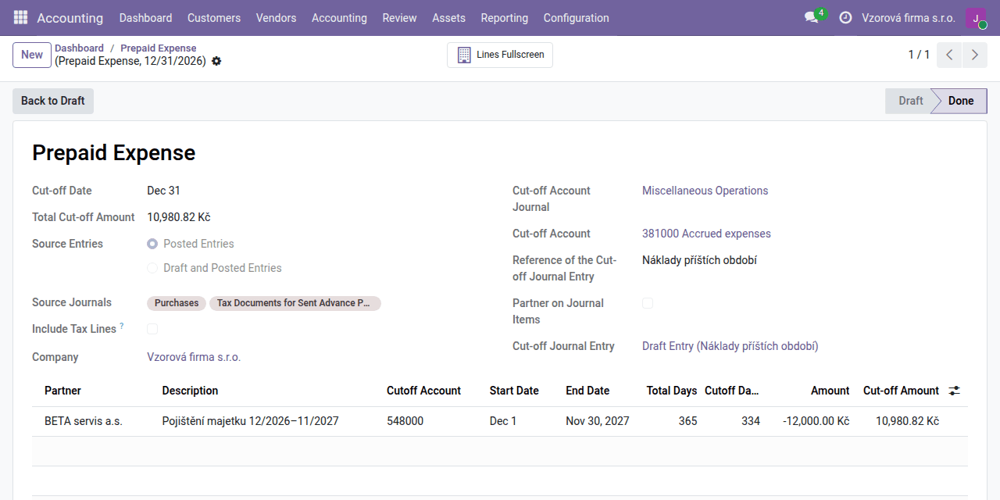
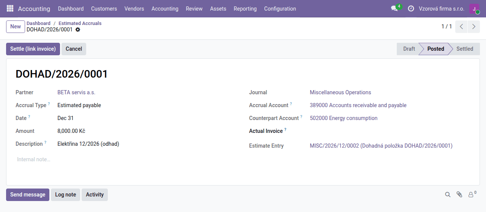
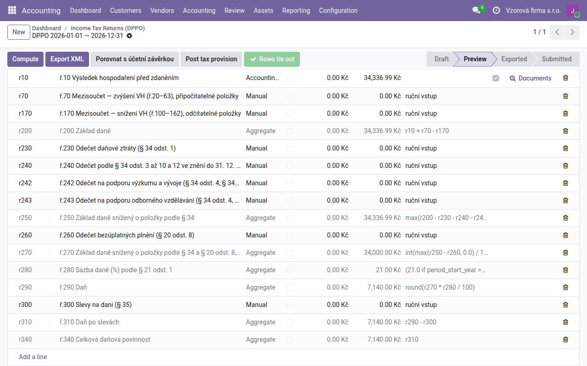
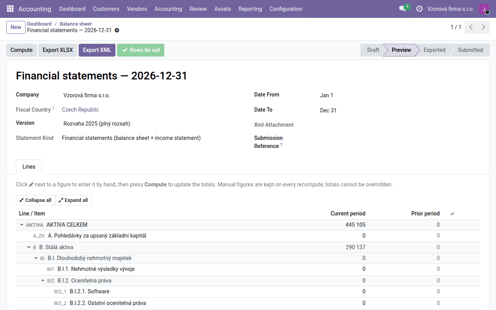

Task guide
Year end
Closing the accounting year step by step — stock-taking, cut-offs and estimated accruals, exchange differences, the income tax, the financial statements, the closing and opening of the books and the lock dates.
| Country | Czech Republic |
|---|---|
| Edition | Odoo Community |
| Covers | account, account_lock_date_update, l10n_cz_inventory_verification, account_cutoff_base (delivered separately), account_cutoff_start_end_dates, l10n_cz_account_cutoff, l10n_cssk_accrual, account_multicurrency_revaluation, l10n_cz_currency_revaluation, l10n_cssk_income_tax_base, l10n_cz_dppo, l10n_cssk_fs_base, l10n_cz_fs, l10n_cssk_fs_xlsx, l10n_cz_fiscal_year_closing, l10n_cssk_core |
What this guide is for
The year-end work of a Czech accountant in the order it is done in Odoo, with what each step posts. Most steps have a module guide of their own; this one puts them in sequence and says what to check before going on.
| Step | Where |
|---|---|
| 1. Finish the year's documents | Before you start |
| 2. Inventarizace | Accounting → Accounting → Inventarizace |
| 3. Časové rozlišení (381–385) | Accounting → Accounting → Cut-offs |
| 4. Dohadné položky (388, 389) | Accounting → Accounting → Transactions → Estimated Accruals |
| 5. Exchange differences at the balance-sheet date | Accounting → Accounting → Closing → Currency Revaluation |
| 6. Depreciation and deferred tax | Fixed assets and depreciation |
| 7. Income tax | Accounting → Reporting → Statutory Reports → Income Tax (DPPO) |
| 8. Financial statements | Accounting → Reporting → Statutory Reports |
| 9. Closing and opening the books | journal entries against 710, 702 and 701 |
| 10. Locking the year | Accounting → Accounting → Lock Dates |
Before you start
- Every invoice, bill and bank statement of the year is posted, and the December VAT is closed (Month-end VAT close).
- 261000 Cash in transit is nil and 221002 / 221003 hold only payments really on their way (Bank accounts).
- Depreciation is posted to 31 December (Fixed assets and depreciation).
- No document of the year is left in Draft: filter Accounting → Accounting → Transactions → Journal Entries by status.
Inventarizace
Accounting → Accounting → Inventarizace → New: one inventarizace for the
year, with an inventurní soupis for every count or check — a warehouse,
the cash desk, an asset group, an account. For a dokladová inventura with an
account, Read book balances takes the account's balance at the
balance-sheet date from the ledger, and you enter what you found. The module
keeps and prints the records the Accounting Act asks for; the differences it
shows (manka, přebytky) you post yourself as internal documents. The whole
procedure is in
l10n_cz_inventory_verification.
Časové rozlišení
A cost or revenue invoiced in one year and belonging partly to another is moved with a cut-off. It works from the dates on the document lines:
- On the bill or invoice line, fill in Start Date and End Date — for an annual insurance, 1. 12. 2026 – 30. 11. 2027. Do it when the document is entered, all year round.
- At the year end: Accounting → Accounting → Cut-offs, the type, New. Enter the Cut-off Date (31 December) and check the Cut-off Account Journal — if it is empty, choose Miscellaneous Operations, and set it once as Default Cut-off Journal in the settings, block Cut-offs.
- Re-Generate Lines, check the lines, and Create Journal Entry. The entry is a draft dated on the cut-off date: check it and post it.
| Menu | Account | For |
|---|---|---|
| Prepaid Expense | 381000 náklady příštích období | a bill of this year covering next year too |
| Prepaid Revenue | 384000 výnosy příštích období | an invoice of this year covering next year too |
| Accrued Expense | 383000 výdaje příštích období | a bill dated next year covering this year |
| Accrued Revenue | 385000 příjmy příštích období | an invoice dated next year covering this year |

Posting — an insurance of 12,000 Kč for 1. 12. 2026 – 30. 11. 2027, on 548000; 334 of its 365 days belong to 2027:
| Document | Account | Debit | Credit |
|---|---|---|---|
| Cut-off entry, 31. 12. 2026 | 381000 náklady příštích období | 10,980.82 | |
| 548000 Other operating expenses | 10,980.82 |
The cut-off entry is not reversed automatically: on the first day of the
new year use Reverse Entry on it, so that the cost returns to 548000 in
the year it belongs to. Accounts and settings are described in
l10n_cz_account_cutoff.
Dohadné položky
A cost of the year whose invoice has not arrived and whose amount is only estimated — December electricity, the audit — is an estimated accrual:
- Once: tick Allow Reconciliation on accounts 388000 and 389000 in the chart of accounts; the Czech chart ships them without it.
- Accounting → Accounting → Transactions → Estimated Accruals → New: Partner, Accrual Type (Estimated payable for a cost), Date 31 December, Amount without VAT, a description, the Journal, the Accrual Account (389000) and the Counterpart Account (the expense account).
- Post Estimate.

| Document | Account | Debit | Credit |
|---|---|---|---|
| Estimate DOHAD/2026/0001, 31. 12. 2026 | 502000 Energy consumption | 8,000 | |
| 389000 dohadné účty pasivní | 8,000 |
When the invoice comes, post it as usual, pick it on the estimate in Actual
Invoice and click Settle (link invoice): the estimate is reversed on
the invoice date, 389000 clears, and only the difference between the estimate
and the invoice stays in the new year
(l10n_cssk_accrual).
Exchange differences
Receivables, payables, bank accounts and cash in a foreign currency are revalued at the ČNB rate of the balance-sheet date:
- Once: tick Allow Currency Revaluation on every account to be revalued (311, 321, the foreign-currency 221 accounts and others your accountant names), and make sure the rate of 31 December is in Odoo.
- Accounting → Accounting → Closing → Currency Revaluation: the Revaluation Date, and clear the start of the revaluation period — it is pre-filled with the first day of the current month and would leave out every open item from earlier months.
- Validate. Losses go to 563000, gains to 663000, as draft entries per account, currency and partner.
The report is in Accounting → Reporting → Closing Entries → Currency
Revaluation Report; details and the reversal are in
l10n_cz_currency_revaluation.
Income tax
Accounting → Reporting → Statutory Reports → Income Tax (DPPO) → New: the year, Version DPPDP9, Statement Type Řádné and Compute.
- ř. 10 — the accounting result before tax — is computed from classes 5 and 6.
- The items that increase and reduce it (ř. 70, ř. 170) and the deductions are entered by hand with Override: non-deductible costs, the difference between accounting and tax depreciation from Accounting vs Tax Depreciation, a tax loss.
- The base, the rounding to whole thousands, the rate and the tax follow.

Post tax provision books the computed tax, 591 on the debit side and 341
on the credit side. Do it before the statements, so that they show the result
after tax. To file, link the computed Rozvaha and Výkaz zisku a ztráty on
the return and Export XML for EPO
(l10n_cz_dppo).
Financial statements
Accounting → Reporting → Statutory Reports → Balance sheet (and Income statement, Cash flow statement, Statement of changes in equity) → New: the year, the Version — the full scope is offered; pick (zkrácený rozsah) for the abridged one — and Compute.

- Rows tie out in the header says every row equals its accounts; Unreconciled rows lists the ones that do not.
- Unmapped accounts lists accounts with a balance that reach no row of this statement. On the balance sheet it should be empty.
- AKTIVA CELKEM must equal PASIVA CELKEM. A difference equal to an earlier year's result means that year was never carried to 431 — see Closing and opening the books.
- Export XLSX gives the statement as working papers; the rozvaha and the výkaz zisku a ztráty are filed inside the income-tax return.
What each row contains, the account tags the full výkaz zisku a ztráty needs
and the limits are in l10n_cz_fs.
Closing and opening the books
Czech bookkeeping closes the year through 710 Účet zisků a ztrát and 702
Konečný účet rozvažný and opens the next one through 701 Počáteční účet
rozvažný. The localization makes these three accounts postable
(l10n_cz_fiscal_year_closing);
the entries themselves are not generated — post them as journal entries,
typed or imported:
- Once: create a journal of type Miscellaneous for them (for example Uzávěrka roku) and name it in Accounting → Configuration → Settings, block Czech / Slovak Localization, field Year-end closing journals. The statutory statements, the income-tax return and the ledgers then leave its entries out; otherwise every closed account would show zero on the last day of the year.
- Dated 31 December, in that journal:
| Entry | Debit | Credit |
|---|---|---|
| Closing the cost accounts | 710000 | each account of class 5 |
| Closing the revenue accounts | each account of class 6 | 710000 |
| The result — a profit | 710000 | 702000 |
| Closing the asset accounts | 702000 | each account with a debit balance |
| Closing the liability and equity accounts | each account with a credit balance | 702000 |
- Dated 1 January of the new year, the mirror of the last two rows against 701000, and the result of the closed year: 701000 on the debit side and 431000 Výsledek hospodaření ve schvalovacím řízení on the credit side for a profit.
- After the general meeting, transfer 431 to 428 or 429 with the template
in Accounting → Accounting → Create Entry from Template
(
l10n_cz_account_move_template).
The balances to close are in Accounting → Reporting → OCA accounting reports → Trial Balance for the year (Ledgers and reports). Odoo itself needs none of these entries to carry balances into the new year — they are what the Accounting Act asks for, and what brings the year's result to 431, where the next balance sheet reads it.
Locking the year
When the statements are approved and filed, set the Global Lock Date in Accounting → Accounting → Lock Dates to 31 December, and once nothing more can change, the Hard Lock Date, which can never be moved back (Closing a period). Then close the tax depreciation year (Fixed assets and depreciation).